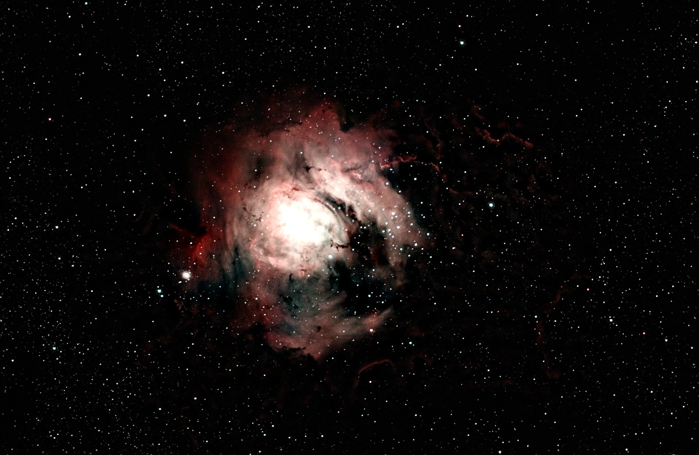
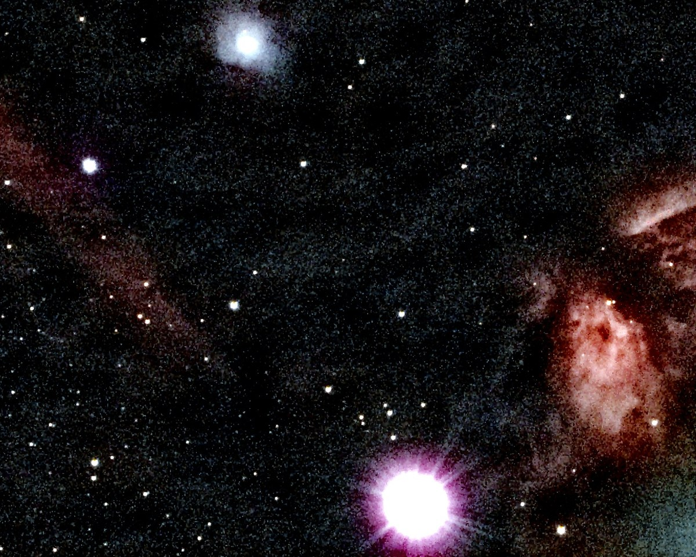
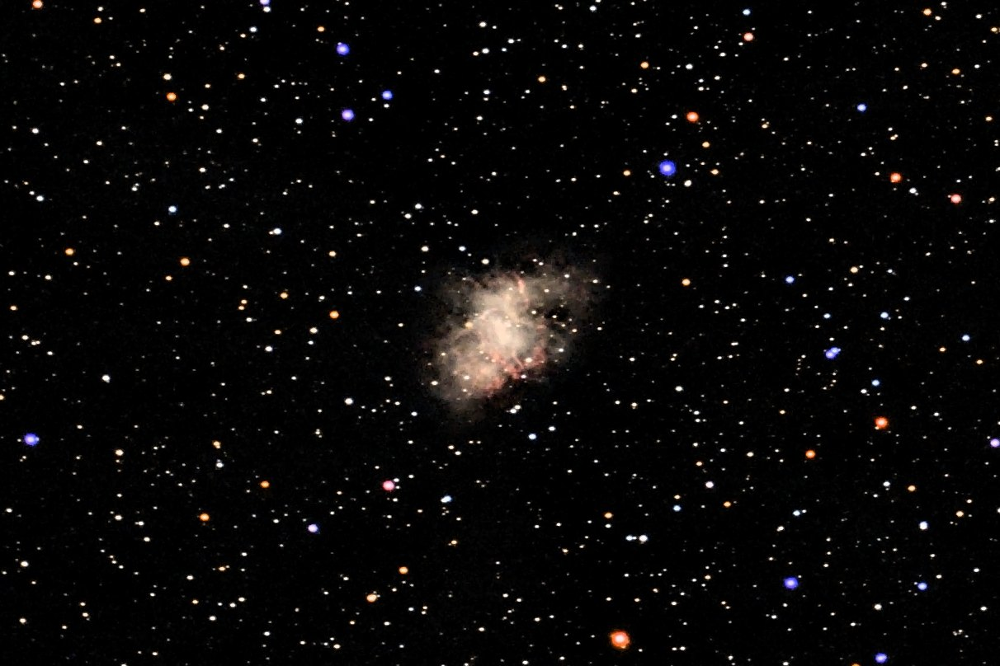
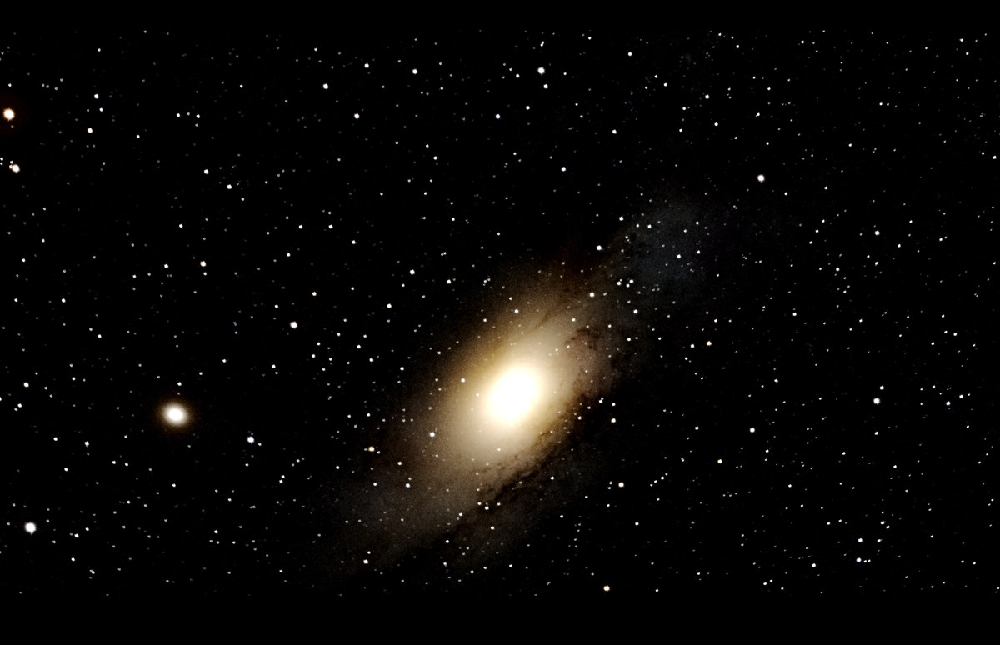
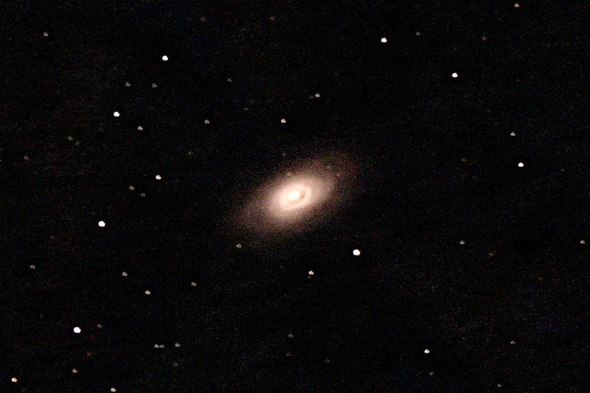
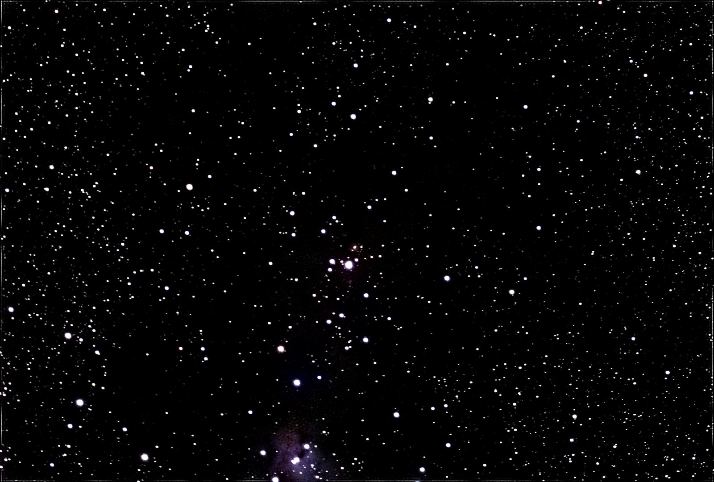

Nebulae


Lagoon Nebula (M8)
94 × 30 s, 47 minutes · default settings, version 2.11.9

Omega Nebula (M17)
114 × 30 s, 57 minutes · nebula preset

Orion Nebula (M42)
Seven nights, 431 frames, 2 h 44 min, each night stacked separately, aligned to the deepest one and finished once · default settings, version 2.13

Dumbbell Nebula (M27)
Two nights, 55 frames, 9 minutes · default settings and the masked preview stretch, version 2.13 · cropped to 32% of the frame width


Horsehead and Flame Nebula region
213 × 10 s, 36 minutes


Crab Nebula (M1)
133 × 20 s, 44 minutes · default settings, version 2.11.9 · cropped to 42% of the frame width
Galaxies

Whirlpool Galaxy (M51)
Eight nights, 517 frames, 2 h 38 min · default settings, version 2.13 · cropped to 33% of the frame width


Andromeda Galaxy (M31)
183 × 10 s, 31 minutes


Black Eye Galaxy (M64)
106 × 20 s, 35 minutes · default settings, version 2.11.9 · cropped to 42% of the frame width
Star fields and clusters

Sagittarius Star Cloud (M24)
138 × 10 s, 23 minutes · star-field preset

Pleiades (M45)
Fifteen nights, 1427 frames, 5 h 16 min · default settings, version 2.13

Globular cluster M15
172 × 15 s, 43 minutes · default settings, version 2.13 · cropped to 32% of the frame width


Christmas Tree Cluster (NGC 2264)
53 × 20 s, 18 minutes · default settings, version 2.11.9
Images marked with a version were stacked earlier and finished again with that version's defaults using --from-stack; the others were made with earlier versions. For how they compare with the telescope's own stack and with Siril, see the comparison on the home page.
Comets

Comet C/2025 A6 (Lemmon)
111 × 10 s, 18 minutes, stacked on the comet with --comet-mode · version 2.13